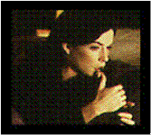

Contents | Features | Reviews | News | Archives | Store

Contents | Features | Reviews | News | Archives | Store
|  | A Chat with Todd Solondz by Sean Axmaker |
Todd Solondz has upped the ante on his career. After surprising audiences with his darkly hysterical satire of adolescence and teenage cruelty in Welcome to the Dollhouse, he pushed the boundaries of taste and convention even farther with his latest film Happiness. The controversial but acclaimed film won raves as Cannes and made industry headlines when Universal refused to distribute the picture through it’s subsidiary arm October (the film is being distributed by it’s production company, Good Machine). It’s going to be a hard sell to the American public. As Solondz happily admits, "…it’s not for everyone and it’s not designed for everyone and I don’t think I’ll ever write anything that’s designed to appeal to everyone." He’s been on the road, appearing with the picture at film festivals and granting interviews to get the word out. On October 12 he took time out from his schedule for a short phone interview with Nitrate critic Sean Axmaker.
SA: In Welcome to the Dollhouse you push social satire into a different direction. On the one hand it’s dark and scathing, yet you still have a lot of sympathy for the main character. In "Happiness" there doesn’t seem to be a lot of sympathy to go around. Is there a reason for becoming even darker in this film, and less sympathetic?
TS: I think that it is a much more troubling film, but I happen to not feel any less compassionate towards the characters in Dollhouse than I do in this movie. I think to say that I ask everyone to sympathize with the unsympathetic is somewhat inaccurate. Many people have walked out of Dollhouse and said "Oh, that was me, I was Dawn Weiner," I don’t anticipate anyone walking out and saying "That was me, I was Bill Maplewood." But for me the tragedy of Bill Maplewood, as many people focus on him, is his family: he loves his wife, he loves his son. He’s not a monster but struggles with a monster within and he succumbs to this demon, so to speak, and he transgresses, and what he does is unforgivable. But if there is to be any redemption, and I say that’s a big "if," I think it lies in the love, the honesty, he shares with son, before whom he cannot but tell the truth. I mean, to shudder at the repugnance of his deeds I think is an appropriate response.
I read In Cold Blood years ago, you know it’s the story of a vile crime that these lowlifes perpetrated. But as you read and get to know something of the hearts and minds of these characters, it becomes a heartbreaking portrait, so that when they hang the criminals at the end of the book, you know what you’re hanging and there’s a terrible sorrow, the waste, the tragedy, the loss of it all. And I feel that certainly if one is to, I’m not going to speak pro or con as capitol punishment goes, but I think that if you’re going to hang Bill Maplewood, say "Okay, pull the switch" so to speak, if you’re going to pull that switch you have to know what you are annihilating, and that for all the horror there is still something of a life there, something of terrible, terrible sorrow, and I think that I’m very
moved by that. I think it makes, if one can get beyond the horror of the deed, that I think there is something in becoming become more fully human and not being able to dismiss quite so easily someone that is just reduced as ‘the pedophile,’ so to speak, in some villainous form that we are all accustomed to.
All of these characters for me are bleeding souls. That for me is what ties them together, the themes for me are loneliness and desire, isolation, alienation, and the struggle to connect, and these are universals and I can only hope that for all the extreme nature of these taboos that that is not lost on the audiences. I mean if the audience just writes off these characters as a bunch of freaks I will have failed for that audience. For
me, just as I was for "Dollhouse," I feel equally connected emotionally speaking to all of these characters. Of course I keep a certain amount of detachment, without which it would all be too unbearable for me and I suppose for the audience as well, and I think it’s from that that a certain kind of humor arises, but if one finds it funny it certainly is never a joke.
SA: I think that for me the most moving scenes in the film were between Bill and his son Billy, particularly when they have their very frank sex talks. The dialogue in those scenes, taken out of context, verges on the edge of parody, but the way it’s delivered by Dylan Baker and presented in the scene with the two of them, it has a real honesty and a real depth of feeling, I think more so than you see in any other characters that connect in any way in the film.
TS: I feel that for me some of the most tender moments really are between Phil Hoffman and Camryn Manheim, when she’s caressing him on his bed and when he joins her on his, or just when they’re dancing,, that there’s a kind of communion of a non-sexual nature that takes place that I am very moved by.
SA: I agree, I think that Philip Seymour Hoffman and Camryn Manheim are absolutely terrific in those roles, especially Hoffman. I think he takes a character that could have turned into buffoon and invests him with an awful lot of emotion.
TS: I think he’s great. It’s a difficult film, it’s a really very tricky film, and much as in Dollhouse, and even more so now, sometimes you have one half of the audience telling me how funny it is or dead on and so forth, and the other half being angry at the first half: "How can you laugh? This is so sad. It’s so sorrowful and painful and horrific and so-forth." For me it’s always both and I think one’s orientation, so to speak, is very much what’s going to determine your response to these films.
I nevertheless have to say, I think it was at Telluride a month ago, late one night a college kid who may have been a little tipsy came up to me and told me how much he loved the movie and how funny he found it and he told me had a joke that he thought I would appreciate and that I would understand. And he proceeded to tell me this very ugly, very crass joke, and it was fortunately very short and he ran off. What pains me about this little encounter is that I think if he had understood what I think I was trying to do there in the movie, he would never have thought that I would be the best audience or the audience at all for this kind of joke. You cannot know how people will respond but you just try to remain faithful to your own feelings about the characters and the reality you set up and hope that others will get at what you’re trying to get at.
SA: Taking such black, scathingly satirical perspective is going to create some problems in getting these characters’ feelings of loneliness across to an audience. Why do you choose that route?
TS: You’re presupposing that everyone responds in this way, but I think that there are those who do respond to the themes of which I have spoken and then there may be others who are unable to get beyond some of the taboo material that’s addressed in this film. But there’s nothing in this film that I don’t think one won’t see discussed any day of the week, whether it be a TV talk show, a newspaper, a news magazine, tabloids and so forth. I mean it’s out there every day assaulting us. The difference in part is that the media tends to have a dual sort of message, on the one hand being very moralistic and on the other a kind of entertainment, a kind of titillating freak show. So you get that jangly, righteous moralistic/exploitative message and it seems inevitable that a filmmaker is going to try to address these issues in a more serious, exploratory fashion. But as I may have said (forgive me if I’m repeating myself), if the audience just looks at these characters as a bunch of freaks I definitely will have failed that audience. Fortunately that response is not a universal one.
SA: It’s been getting good reviews from festivals, but it certainly is courting a lot of controversy.
TS: Well it’s not for everyone and it’s not designed for everyone and I don’t think I’ll ever write anything that’s designed to appeal to everyone. If you want sympathetic characters it’s easy enough to do, you just give someone cancer and of course we’ll all feel horribly sad and sorry. You make anyone a victim and people feel that way. But that’s not of interest to me as a filmmaker or as a writer. I may be accused of a certain kind of misanthropy but I think I could argue the opposite. I think that it’s only by acknowledging the flaws, the foibles, the failings and so forth of who we are that we can in fact fully embrace the all of who we are. People say I’m cruel or that the film’s cruel, but I think rather it exposes the cruelty and I think that certainly the capacity for cruelty is the most difficult, the most painful thing for any of us to acknowledge. That we are at all capable. And yet I think that it exists as much as the capacity for kindness and it’s only the best of us that are able to suppress, sublimate, re-channel and so forth these baser instincts, but I see them to some degree at play as a regular part of life in very subtle ways and not so subtle ways. I don’t think that after the seventh grade that these impulses evaporate. So from my perspective I’m trying to be honest with what I see and what I’ve experienced and what I believe is true to our nature.
SA: Coming out of Happiness I went away with the idea that you don’t see a lot of hope for American society.
TS: I don’t feel that way. Certainly I think just the act and fact of making a film is an optimistic gesture to begin with. I’m not jumping off any roof. And I think that for some of these characters I think their fates are somewhat bleak but I think for others I’m much more optimistic. For Joy and I’m hopeful at this point in the game that Joy and Allen could make some sort of connection if they were to meet, and for Billy Maplewood there is a kind of future that while fraught with all sorts of perils I think I’m actually more hopeful for him. So I don’t really feel it’s quite as cut and dried as that. I think in part because we’re all so unused to seeing movies that are less than rosy, they feel particularly unrosy, but I think it’s a question, to a certain extent, of what one is used to.
SA: I assume that everything we saw on the screen was in the screenplay to begin with.
TS: Yeah, there was little in the way of improvisation.
SA: How did you work with the actors to develop the characters as we saw them on the screen?
TS: It’s really through the casting process that most of my so-called rehearsal takes place, the actor getting to know me and vice versa, talking about the part and also of course then reading from the script. Once a certain kind of trust is established you make a leap of faith. Just as they do in me I do in them make this leap of faith. But my role on the set is in a certain sense is just to make them feel comfortable, that sense of trust so to speak, so that they can do what they do best and feel the freedom in that way.
SA: The performances were all excellent and I think you put a wonderful cast together for this film.
TS: Well I think so too, I’m very pleased with them all.
Be sure to read the Nitrate Online's coverage of Happiness at the Toronto International Film Festival and the full review.
Contents | Features | Reviews | News | Archives | Store
Copyright © 1999 by Nitrate Productions, Inc. All Rights Reserved.